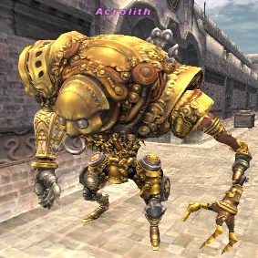

Description
Alzadaal Undersea Ruins is a dungeon in Ruins of Alzadaal.
Map

Involved in Quests / Missions
| Quest / Mission | Type | Starter | Location |
|---|---|---|---|
| Transformations | AF (BLU) | Waoud | Aht Urhgan Whitegate (J-10) |
NPCs
| Name | Location | Type |
|---|---|---|
| Shahayl | J-8 | Assault NPC |
Notorious Monsters
| Name | Level | Drops | Steal | Family | Spawns | Notes |
|---|---|---|---|---|---|---|
| Armed Gears | — | Armed Gears' Fragment Aurum Sabatons Earth Grip Oracle's Gloves Thunder Grip | — | Gears | 1 | Spawned by: trading Ferrite at (G/H-11). |
| Cheese Hoarder Gigiroon | — | Gigiroon's Cape Armadillo Cuisses Beast Slayer | — |  QiqirnImage source QiqirnImage source | 1 | Spawned by: trading Rodent Cheese at (F-8/9) on main map |
| Ob | — | Ob's Arm Attuner Coiler Stabilizer Guignol Earring Eraser Mana Channeler Target Marker Smoke Screen Steam Jacket Equalizer | — | Automatons | 1 | Spawned by: trading Cog Lubricant at (G-7) on Bhaflau Remnants map |
| Wulgaru | — | Wulgaru's Head Hissho Hachimaki Riot Shield | — |  AcrolithImage source | 1 | Spawned by: trading Opalus Gem at (G-6) |

Regular Monsters
| Name | Level | Drops | Steal | Family | Spawns | Notes |
|---|---|---|---|---|---|---|
| Qiqirn Goldsmith | 76-77 | Almond Qiqirn Cape | Qiqirn Sandbag | QiqirnImage source | 14 | L, S, Sc |
| Qiqirn Poulterer | 76-78 | Almond | Qiqirn Sandbag | QiqirnImage source | 10 | L, S, Sc |
Maps


Story walkthroughs in this area
| Story | Mission / quest |
|---|---|
| ToAU 9 | Undersea Scouting |
| ToAU 10 | Astral Waves |
| ToAU 15 | The Black Coffin |
| ToAU 42 | Path of Darkness |
| ToAU 44 | Nashmeira's Plea |
References
External references describe their own server or retail rules. Documented Zenith changes take precedence.
Map credits: Map 1 — HorizonXI Wiki · Map 2 — HorizonXI Wiki · Map 3 — HorizonXI Wiki · Map 4 — HorizonXI Wiki · Map 5 — HorizonXI Wiki · Map 6 — HorizonXI Wiki · Map 7 — HorizonXI Wiki · Map 8 — HorizonXI Wiki · Map 9 — HorizonXI Wiki · Map 10 — HorizonXI Wiki · Map 11 — HorizonXI Wiki · Map 12 — HorizonXI Wiki · Map 13 — HorizonXI Wiki. Original game maps © SQUARE ENIX; redrawn maps retain the credited authorship and license.


Additional level-75 reference
These mysterious undersea ruins unilke any others in all of Vana'diel were until recently the subject of an investigation by the Aht Urhgan Archaeological Research Institute, but have been opened to the public since the survey's completion. A number of Qiqirn have come to inhabit the ruins and remain hostile to intruders.
This area is only accessible if the Treasures of Aht Urhgan expansion is installed and The Road to Aht Urhgan quest is completed. It may also be necessary to complete certain portions of Aht Urhgan Mission 9: Undersea Scouting.Verification Needed
Connecting Areas
Map 1 does not lead to Nyzul Isle Staging Point, it only connects the two maps of Caedarva Mire.

Other than that, Nyzul Isle Staging Point is the hub of Alzadaal: all teleports lead to and from its map. To reach it without using the Runic Portal, head out of Al Zahbi to Bhaflau Thickets (F-6), and follow the first teleport route backwards.

- Nyzul Isle Staging Point (map)
- (H-9) teleporter -> Bhaflau Remnants area (map)
- West teleporter -> back
- East teleporter -> Map 7
- North teleporter -> back
- West exit -> Bhaflau Thickets (Map 1 F-6)
- (G-9) teleporter -> Zhayolm Remnants area (map)
- East teleporter -> back
- West teleporter -> Map 5
- North teleporter -> back
- East exit -> Bhaflau Thickets (Map 2 F-6, Tandjana Islet)
- (G-8) teleporter -> Arrapago Remnants area (map)
- East teleporter -> back
- West teleporter -> Map 4
- North teleporter -> back
- East exit -> Caedarva Mire (Dvucca Isle G-10)
- (H-8) teleporter -> Silver Sea Remnants area (map)
- West teleporter -> back
- East teleporter -> Map 6
- East teleporter -> back
- North exit -> Caedarva Mire (Hediva Isle- to Khimaira)
- West teleporter -> Map 3
- East teleporter -> back
- North exit -> Caedarva Mire (Azouph Isle J-10)
- West teleporter -> Map 2
- West teleporter -> back
- South exit -> Mount Zhayolm (G-7)
- (H-9) teleporter -> Bhaflau Remnants area (map)


Notes
The Alzadaal Undersea Ruins may be entered by trading an Imperial Silver Piece to the Immortal blocking the path at any of the entrances, by possessing a Remnants Permit, or by possessing a Captain Wildcat Badge. Navigation in Alzadaal is accomplished using teleporters which connect all but one of the maps, and thus several areas of Aht Urhgan.
Involved in Quests/Missions
| Quest | Type | Starter | Location |
|---|---|---|---|
| Transformations | AF (BLU) | Waoud | Aht Urhgan Whitegate (J-10) |
| Mission | Country | Starter | Location |
| Aht Urhgan Mission 9: Undersea Scouting | Aht Urhgan | Naja Salaheem | Aht Urhgan Whitegate (I-10) |
Mobs Found Here
| Name | Level | Drops | Steal | Family | Spawns | Notes |
|---|---|---|---|---|---|---|
| Qiqirn Poulterer
|
76-78 Verification Needed | ?? | ?? | Qiqirn | L, S, Sc | |
| Qiqirn Goldsmith
|
76-78 Verification Needed | ?? | ?? | Qiqirn | L, S, Sc |
|
HP = Detects Low HP; M = Detects Magic; Sc = Follows by Scent; T(S) = True-sight; T(H) = True-hearing JA = Detects job abilities; WS = Detects weaponskills; Z(D) = Asleep in Daytime; Z(N) = Asleep at Nighttime |
Maps
-
Alzadaal Undersea Ruins Map 1
-
Alzadaal Undersea Ruins Map 2
-
Alzadaal Undersea Ruins Map 3
-
Alzadaal Undersea Ruins Map 4
-
Alzadaal Undersea Ruins Map 5
-
Alzadaal Undersea Ruins Map 6
-
Alzadaal Undersea Ruins Map 7
-
Alzadaal Undersea Ruins Map 8
-
Alzadaal Undersea Ruins Map 9
-
Alzadaal Undersea Ruins Map 10
-
Alzadaal Undersea Ruins Map 11
-
Alzadaal Undersea Ruins Map 12
-
Alzadaal Undersea Ruins Composite Map


Adapted from Eden Wiki: Alzadaal Undersea Ruins · Contributors and history · CC BY-SA 4.0. Revision 45940. Layout, links and optional background text adapted for Zenith.